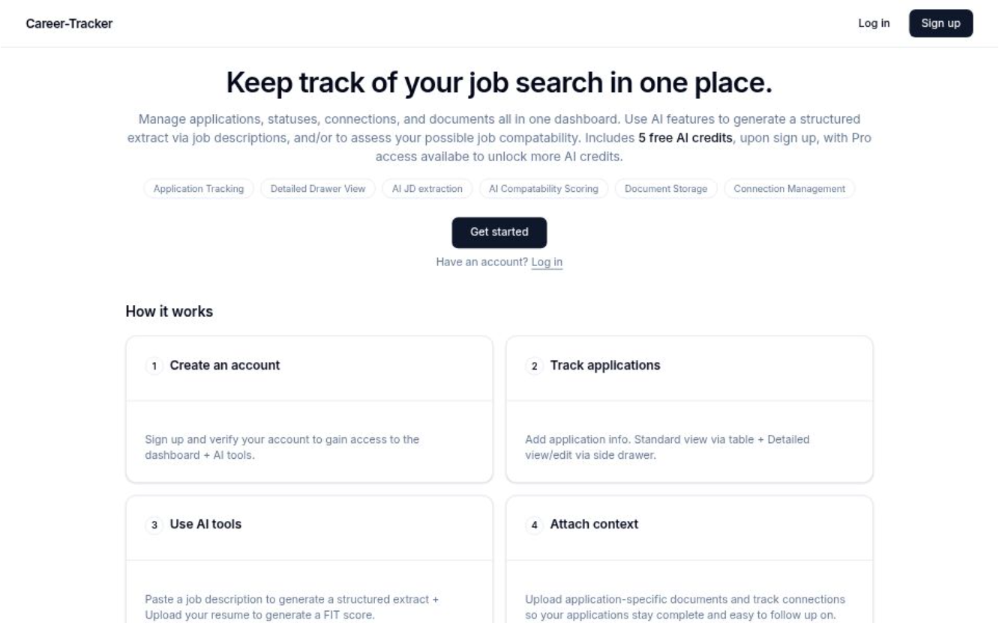

I’m a backend-leaning software developer who specializes in building the backend systems that make products work.
APIs, databases, authentication, and cloud deployment. I build things end-to-end, ship them to real users, and keep improving them.
Most recently I built and launched Career-Tracker.ca, a job application tracker used by real people to manage their applications, contacts, and related documents.
I'm a Toronto-based developer with a passion for building systems that are fast, secure, and maintainable.
I’m strongest in backend development, designing APIs, modeling data, and handling auth.
I’m comfortable taking a feature all the way from the database to a deployed, user-facing product.
I take pride in owning features end-to-end, and I bring the same rigour to side projects as I do to professional work.
Outside of code, I’ve spent years teaching 120+ students programming and AI concepts,
which sharpened how I communicate ideas and give feedback that actually helps.
Education
BSc Computer Science
University of Western Ontario, ’23
Location
Toronto, Ontario
Open to Canada & U.S. opportunities (relocation possible)
Target Roles
Software Engineer / Developer
Backend Developer
DevOps Engineer
SRE (Site Reliability Engineer)
Data / Cloud Engineer
Interests
API & service architecture
Auth & security patterns
Testing, reliability & DevOps
Languages
Java, TypeScript, JavaScript, Python, C#, SQL
Backend
Spring Boot, Node.js (Fastify / Express), REST APIs, JWT & Auth workflows
Data
PostgreSQL, MongoDB, Prisma, Redis
DevOps & Cloud
Docker, GCP (Cloud Run, Cloud Build, Cloud SQL), AWS (EC2), GitHub Actions CI/CD, Vercel
Frontend (Supporting)
React, Next.js, HTML / CSS
Testing & Quality
Jest, JUnit / Mockito, integration tests, k6 load testing, Swagger / OpenAPI

SaaS Web App · Live & In Use
An application tracking tool I built to replace common spreadsheets that routinely start breaking down at scale.
Paste a job description to generate a structured record automatically.
Then attach specific documents & contacts to applications so you always have access to them.
Use AI to help evaluate your estimated compatibility scoring + helpful guidance based on your resume and the role.
TypeScript
Fastify
Next.js
PostgreSQL
Prisma
Redis
GCP
OpenAI API
- JWT auth with rotating sessions, CSRF protection, Redis rate limiting & Google OAuth — security baked in from day one
- Deployed on GCP: Cloud Run, Cloud Build, Cloud SQL, Secret Manager
- Used daily by real people — iterated based on actual feedback
Microservices Platform · Architecture Study
An IMDb-style movie discovery platform built to practice production-style backend architecture:
independent services with clear boundaries that communicate cleanly and deploy independently.
Java
Spring Boot
Eureka
Next.js
PostgreSQL
Docker
AWS EC2
- Service discovery via Eureka; stateless JWT auth; each service independently deployable
- PostgreSQL index tuning via EXPLAIN ANALYZE lifted throughput from ~200 → ~550 req/s at 20 concurrent users
- Containerized with Docker; GitHub Actions CI builds & pushes images on every merge; deployed on AWS EC2
Full ownership & shipping —
Built, deployed, monitored, and maintained production apps solo. I can take a product from idea to deployed and used.
Backend foundations —
APIs, data models, and auth are where I thrive. I design for correctness and maintainability, not just the happy path.
Security-first thinking —
Auth, CSRF protection, hashed storage, and rate limiting are part of the design from day one, not afterthoughts.
Performance engineering —
Load testing (k6), query analysis (EXPLAIN ANALYZE), and integration tests before shipping. I iterate until numbers improve.
AI integration experience —
Production-tested LLM features (OpenAI API) with structured outputs and server-side validation.
Persistence —
Once I commit to something, I’m consistent until it’s done and done well.
Clear communication —
Taught 120+ students, built curriculas from scratch, wrote detailed code-review rationales. I can explain technical work to anyone.